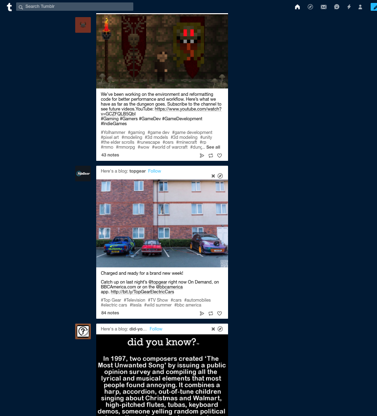
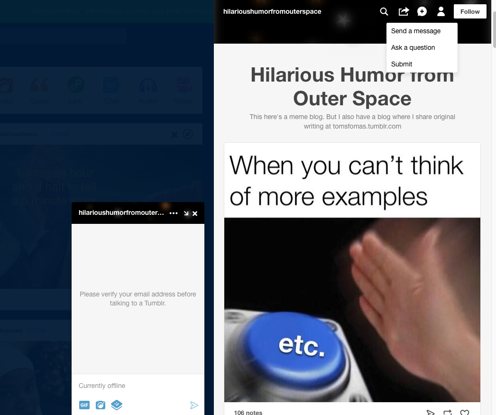

you can find various images and articles relating to your interests.Usernames are given to you at the top of each post proceeded by a "Follow" link. on the right of the site you can see recommendations of blogs to follow as well as trending content. when you scroll down everything on the sides disappear giving you focused content from each blog.
On tumblr you can comment on posts you find on your homepage. If you want a more personal experince you can send direct messages to other users even if you are not following them. On the top right you will find a tool bar.
The image of the lightning bolt can be used to check comments while the image next to it that looks like an envelope can be used to check messages. A big part of the Tumblr is what most site refer to as likes illistrated by a . When you like a post you it is saved to your account and other users can see it.
